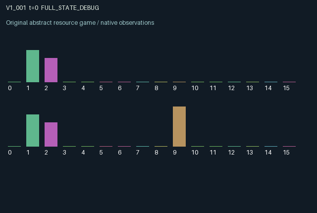

V1_001 / LEGACY_ARRAY
Window v1 · Renewing commons with delayed runoff
A shared renewing stock with a two-slot runoff pipeline.
Release verification episode
Untrained uniform legal actions. Actual JAX state sampled along the full original episode; full-state debug camera. No human performance or learning claim.

Run this game
crucibles play --game v1_001
Start Python locally, then open the address printed by the terminal. Installation, multiplayer, takeover and keyboard controls →
Objective, rewards & ending
Exact task contract
{
"objective": "Renewing commons with delayed runoff; accumulate original per-agent rewards under mechanism.md.",
"natural_termination": "Original t >= 32 horizon.",
"exact_transition_and_reward_source": "def raw_step(self, key, state, actions):\n # 0 rest; 1 gentle draw; 2 deep draw; 3 restore soil; 4 install filter.\n demand = 0.18 * (actions == 1) + 0.5 * (actions == 2)\n allocation = demand * jnp.minimum(1.0, state['stock'] / jnp.maximum(0.01, jnp.sum(demand)))\n tending = (actions == 3).astype(jnp.float32)\n installing = (actions == 4).astype(jnp.float32)\n runoff = jnp.sum(allocation * (actions == 2) * (1.0 - state['filters']))\n soil = jnp.clip(state['soil'] + 0.08 * jnp.sum(tending) - 0.35 * state['queue'][0] - 0.01, 0.0, 1.0)\n renewal = 0.04 + 0.20 * soil * (1.0 - state['stock'])\n stock = jnp.clip(state['stock'] - jnp.sum(allocation) + renewal, 0.0, 1.0)\n rewards = jnp.tanh(2.0 * allocation - 0.12 * tending - 0.15 * installing\n - 0.25 * state['queue'][0]).astype(jnp.float32)\n next_state = {'t': state['t'] + jnp.array(1, jnp.int32), 'stock': stock, 'soil': soil,\n 'queue': jnp.stack((state['queue'][1], runoff)).astype(jnp.float32),\n 'filters': jnp.clip(0.92 * state['filters'] + 0.3 * installing, 0.0, 1.0),\n 'yield': allocation.astype(jnp.float32)}\n done_all = next_state['t'] >= 32\n dones = jnp.full((2,), done_all, dtype=jnp.bool_)\n info = {'done_all': done_all, 'legal_mask': self.legal_actions(next_state)}\n return self.observe(next_state), next_state, rewards, dones, info"
}Declared per-step reward bounds: -1.0 to 1.0. Observability: source_defined.
Rules
Original mechanism document (historical status wording retained)
A shared renewing stock with a two-slot runoff pipeline. Gentle and deep extraction compete proportionally for the same current stock. Only deep extraction creates runoff, mitigated by the extractor's decaying private filter. Runoff affects soil after the pipeline delay; soil determines future resource renewal. Tending repairs shared soil while filter investment changes future individual externalities. The common stock, soil and pipeline couple both agents persistently, unlike a promise clock. Reward is tanh of current allocated yield minus tending/filter costs and arriving shared pollution. Allocation and all continuous stocks are bounded, making the reward finite and within [-1,1]. No policy benefit has been evaluated.
Commands
Roles & abilities
agent_0 Original window-v1 agent; abilities and private parameters follow the original mechanism and observe()
agent_1 Original window-v1 agent; abilities and private parameters follow the original mechanism and observe()
Observation permissions
Training receives only the original observation rows. Role cameras use declared visibility; debug cameras are explicitly marked. Local benchmark records log debug exposure and role takeover history.
Exact observation layout
[
{
"slice": [
0,
16
],
"visibility": "exact original observe() below",
"source_code": "def observe(self, state):\n obs = jnp.zeros((2, 16), dtype=jnp.float32)\n obs = obs.at[:, 0].set(state['t'] / 32.0)\n obs = obs.at[:, 1].set(state['stock'])\n obs = obs.at[:, 2].set(state['soil'])\n obs = obs.at[:, 3].set(state['queue'][0])\n obs = obs.at[:, 4].set(state['queue'][1])\n obs = obs.at[:, 5].set(state['filters'])\n obs = obs.at[:, 6].set(jnp.roll(state['filters'], 1))\n obs = obs.at[:, 7].set(state['yield'])\n obs = obs.at[:, 8].set(jnp.roll(state['yield'], 1))\n obs = obs.at[:, 9].set(jnp.arange(2, dtype=jnp.float32))\n return obs"
}
]Entity visibility & attributes
[]
Actual verification & provenance
Per-game execution receipt
{
"game": "v1_001",
"status": "PASS",
"verification_revision": 2,
"source_sha256": "154452f245ff495f114bd761239e809341994ee63717abaf1984249180fba8e3",
"seed": 20261101,
"runtime": {
"jax": "0.4.38",
"numpy": "1.26.4",
"devices": [
"TFRT_CPU_0"
]
},
"dimensions": {
"num_agents": 2,
"observation_size": 16,
"num_actions": 5,
"max_steps": 32
},
"checks": {
"eager_reset": {
"status": "PASS",
"seconds": 0.25954127311706543
},
"observation_spaces_legal_masks": {
"status": "PASS",
"seconds": 0.15409398078918457
},
"eager_step": {
"status": "PASS",
"seconds": 0.6643593311309814
},
"jit_reset": {
"status": "PASS",
"seconds": 0.08886337280273438
},
"jit_step": {
"status": "PASS",
"seconds": 0.14810943603515625
},
"eager_jit_integer_parity_float_measurement": {
"status": "PASS",
"seconds": 0.0019996166229248047
},
"jit_vmap_reset": {
"status": "PASS",
"seconds": 0.08533668518066406
},
"jit_vmap_step": {
"status": "PASS",
"seconds": 0.20254254341125488
},
"outer_autoreset_api": {
"status": "PASS",
"seconds": 0.26076698303222656
},
"full_original_horizon_episode_and_render": {
"status": "PASS",
"seconds": 1.0630156993865967
}
},
"human_scores": null,
"browser_controls": "PENDING",
"failures": [],
"elapsed_seconds": 4.42322564125061,
"float_parity_max_abs": 0.0,
"numerical_parity": "EXACT",
"raw_terminal_absorbing": "NOT_PART_OF_ORIGINAL_LEGACY_CONTRACT",
"terminal_outer_reset": "PASS",
"episode_steps": 32,
"scripted_random_returns": [
2.081332992762327,
1.3480843007564545
],
"terminal": true,
"demo_information": "FULL_STATE_DEBUG",
"demo_frames": 33,
"render_roles_checked": 2
}Chromium control verification
{
"game": "v1_001",
"status": "PASS",
"human_scores": null,
"engineering": true,
"checks": [
"catalog_selected_and_real_native_reset",
"dom_queue_and_native_step",
"second_participant_ownership_and_native_joint_step",
"all_roles_individually_controllable_no_role_cap",
"explicit_debug_camera",
"release_to_pure_ai_without_reset",
"close_session_preserves_log"
],
"ui_sha256": "314c83040b7b2bfaa517fa4b20c9861a6c37a1bc689a6e61179218685c1d47e3",
"keyboard": "NO_LEGAL_CARDINAL_COMMAND_FOR_ROLE0_AT_RESET",
"seconds": 3.449042320251465
}Original identity and file hashes
{
"id": "v1_001",
"key": "v1_001",
"title": "Window v1 · Renewing commons with delayed runoff",
"summary": "A shared renewing stock with a two-slot runoff pipeline.",
"tags": [
"historical window-v1"
],
"family": "legacy_array",
"dimensions": {
"num_agents": 2,
"observation_size": 16,
"num_actions": 5,
"max_steps": 32
},
"source_sha256": "154452f245ff495f114bd761239e809341994ee63717abaf1984249180fba8e3",
"manifest_sha256": "306a430512f4e1b30e55286c07a489234456368e3e97b0c7d8dcc987f516dcf2",
"files": [
{
"file": "candidate.py",
"bytes": 2714,
"sha256": "154452f245ff495f114bd761239e809341994ee63717abaf1984249180fba8e3",
"origin": "work/exp_2/astra_generation/window_v1/candidate_00001/attempt_00/candidate.py"
},
{
"file": "mechanism.md",
"bytes": 732,
"sha256": "839e1a88dc2b5a7a554b82ddf28981aa6606e79f616e789f281be6f0791357d7",
"origin": "work/exp_2/astra_generation/window_v1/candidate_00001/attempt_00/mechanism.md"
}
],
"original_status": "EARLIER_WINDOW_V1_SOURCE",
"original_namespace": "astra_generation/window_v1",
"original_proposal_index": 1,
"original_saved_replay": false,
"release_validation": "PASS",
"human_scores": null,
"browser_validation": "PASS"
}